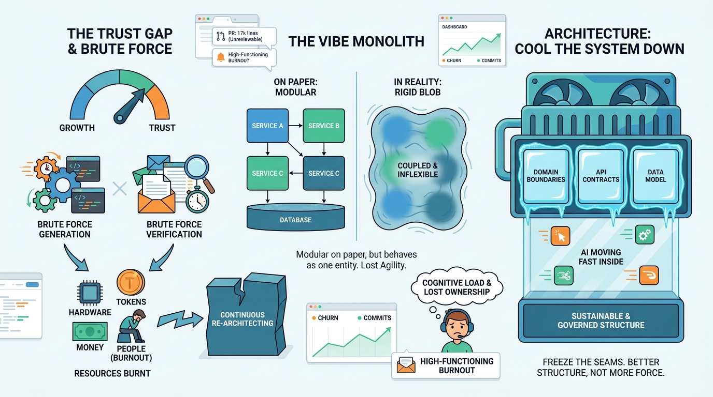

AI Software Development
Breaking Down the Vibe Monolith: Architecting AI-Built Systems to Keep Their Cool

Image generated by Google Gemini (gemini-3-pro-image-preview)
AI Software Development

Image generated by Google Gemini (gemini-3-pro-image-preview)